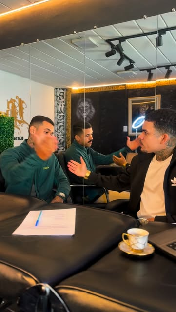
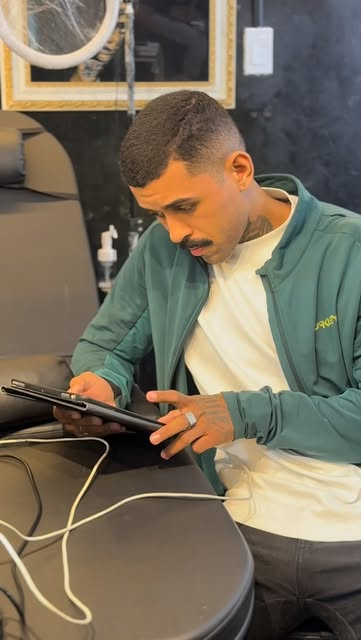
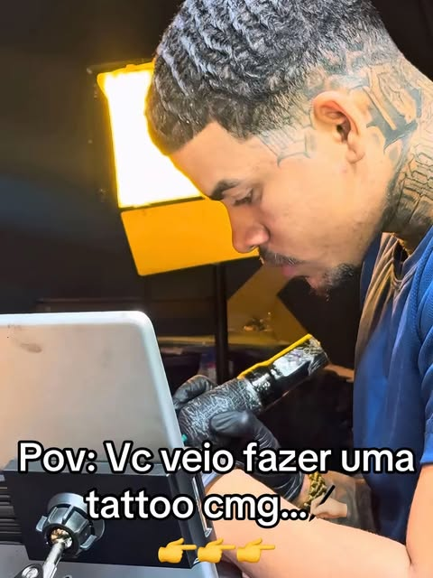
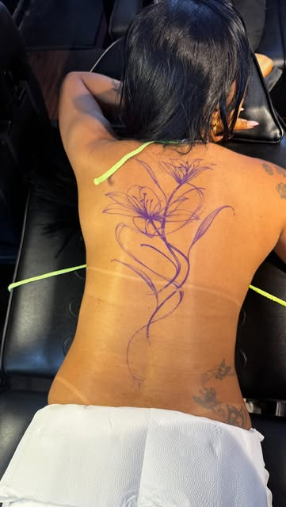
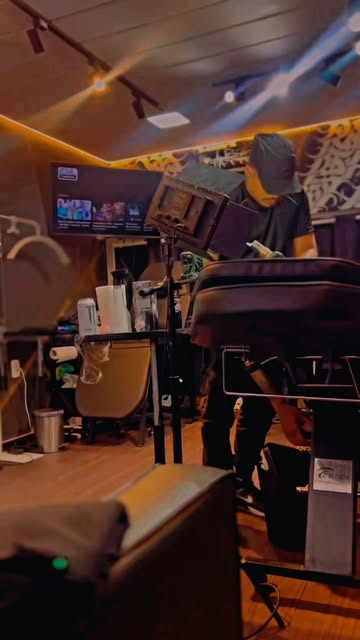

Mantenha protegida
Fique com o curativo pelo tempo que o tatuador indicar. Depois, lave com as mãos limpas, água e sabonete neutro, sem esfregar.
Tatuagem no Original Clube
Do primeiro print salvo no celular até a tattoo cicatrizada. É assim que uma ideia vira peça com o LB ou com o Lelis.
Tudo começa no pedido: você escolhe o tatuador, o estilo, o local do corpo, o tamanho e manda até cinco imagens de referência. Print do Instagram, foto, rascunho: vale tudo.
No realismo preto e cinza, fotos nítidas e bem iluminadas fazem diferença no resultado.

O tatuador transforma a referência em arte pensada para o seu corpo: encaixe no músculo, proporção e o que vai envelhecer bem na pele.

Você vê o desenho, pede ajustes e fecha valor e data na conversa. Só se tatua o que foi aprovado.
No dia marcado, o horário está reservado para a sua peça. Projetos grandes, como costas e fechamentos, são divididos em mais de uma sessão.

A tattoo termina em casa: os cuidados das primeiras semanas decidem como ela fica para sempre. Os principais estão logo abaixo.

Antes da sessão
Orientações gerais para o dia. Se o seu tatuador pedir algo diferente, vale o que ele disser.

Depois da sessão
Orientação geral de cuidados. O seu tatuador passa as instruções finais no dia, e são elas que valem.
Fique com o curativo pelo tempo que o tatuador indicar. Depois, lave com as mãos limpas, água e sabonete neutro, sem esfregar.
Uma camada fina da pomada ou do hidratante indicado, algumas vezes ao dia. Pele hidratada, não encharcada.
Coçou ou descascou? Não puxe. Arrancar a pele leva a tinta junto e falha o desenho.
Até cicatrizar, nada de sol direto, piscina, mar ou banho de banheira. Em Salvador, isso pede disciplina.
Tecido justo atrita e gruda na pele. Prefira roupa folgada sobre a tattoo nova.
Depois de cicatrizada, protetor solar na tattoo é o que mantém o preto preto e o traço fino nítido.
Perguntas frequentes
Não achou a sua? Mande no pedido, no campo "Algo mais".
Depende do tamanho, do local do corpo e do nível de detalhe, por isso tudo é sob orçamento. Pelo pedido do site você conta a ideia, manda referências e recebe o valor na conversa.
Pode. No pedido existe a opção "Trago meu desenho": anexe a imagem e o tatuador avalia se precisa de ajuste para funcionar na pele.
Peças pequenas costumam caber em poucas horas. Fechamentos e costas inteiras podem pedir mais de uma sessão. O tipo de sessão que você escolhe no pedido reserva o tempo certo na agenda.
Varia de pessoa para pessoa e de lugar para lugar. Regiões com osso perto da pele (costela, pé, coluna) costumam incomodar mais. Ir descansado e alimentado ajuda bastante.
Sim: o portfólio do LB tem costas inteiras (leão, tigre, onça, dragão) e fechamentos de braço. Projeto grande começa pela conversa de orçamento.
O clube é barbearia e tatuagem. Faça dois pedidos no site, um para cada, e escolha horários que não se cruzem.
A forma de reservar é combinada direto com o tatuador na conversa do orçamento.
Com o código do pedido você cancela pelo próprio site até 2 horas antes, e o horário volta para a agenda. Depois disso, chame no Instagram.
Escolha com quem, conte a ideia e mande as referências. Leva uns dois minutos.